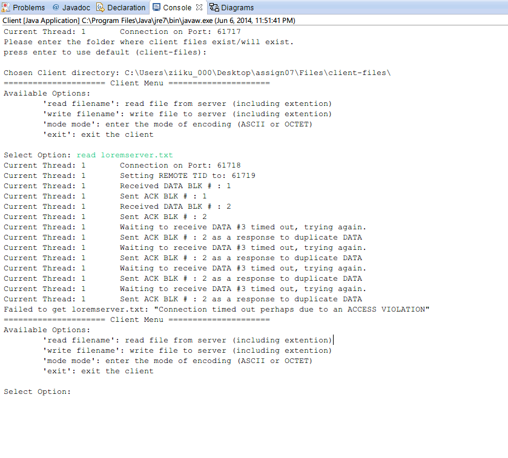
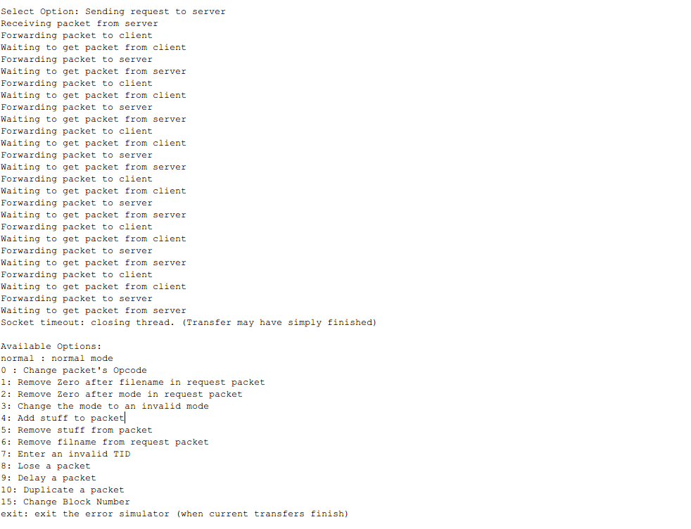
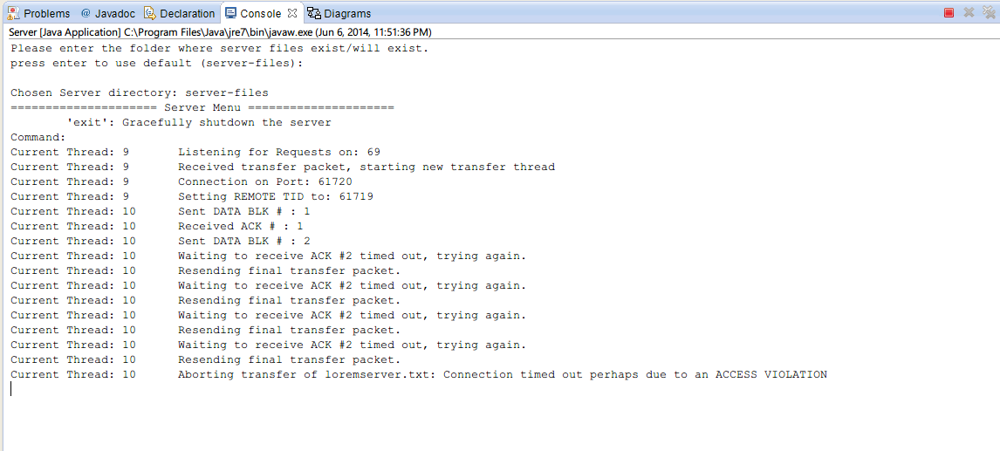

Testing Iteration 4
- Run Server.java file. Press enter to use the default (server-files) folder
- Run errorSim.java file. From here, you have a variety to options to choose from.
- Normal Normal Mode of operation
- 0 Change packet's Opcode
- 2 Remove Zero after mode in request packet
- 3 Change the mode to an invalid mode
- 4 Add stuff to packet
- 5 Remove stuff from packet
- 6 Remove filname from request packet
- 7 Enter an invalid TID
- 8 Lose a packet
- 9 Delay a packet
- 10 Duplicate a packet
- 15 Change Block Number
- exit exit the error simulator (when current transfers finish)
- Follow the steps for any of the option you chose, depending on what Menu Category they belong to.
- Run Client.java file as per normal
- Enter either "read loremServer.txt" or "write loremClient.txt" ENSURE that the File you chose does not exist on target side. Below we have shown what happened in the case of Example 1. We have chosen 'read loremserver.txt' in the scenario shown below
From this document page onwards, it will be assumed that the project has been imported in eclipse and setupTestFiles.java has been run at least once. If you have not done so, click this link to do so.
It was a MUST that you have followed the Normal Operation procedure because the steps of running the files in a sequence have been omited. This also allows you to have a control to test against. Simply click "Previous Content" link from the above menu
{kind=link}
{kind=link}
{kind=link}
{kind=link}
Client Console output
Click To Enlarge
{kind=link}
Click To Enlarge
Error Sim Console output
Click To Enlarge
{kind=link}
Click To Enlarge
Server Console output
Click To Enlarge
{kind=link}
Click To Enlarge
Similarily, you may check all other modes to ensure that our submission is fully functional. We can save you the trouble and let you know that it already is ☺. We have not shown every possible combination, because there are SO many! The mode, the packet, the block number, and the read/write operation. We also wanted to limit the amount of images we are adding in the submission. We however are going to present most cases in our presentation.